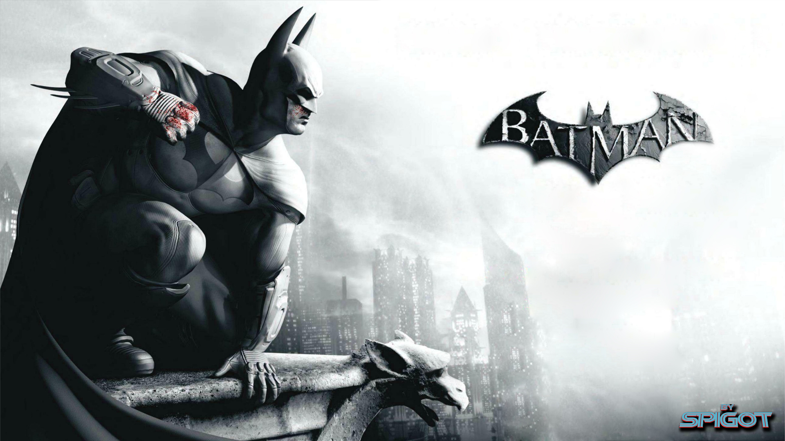
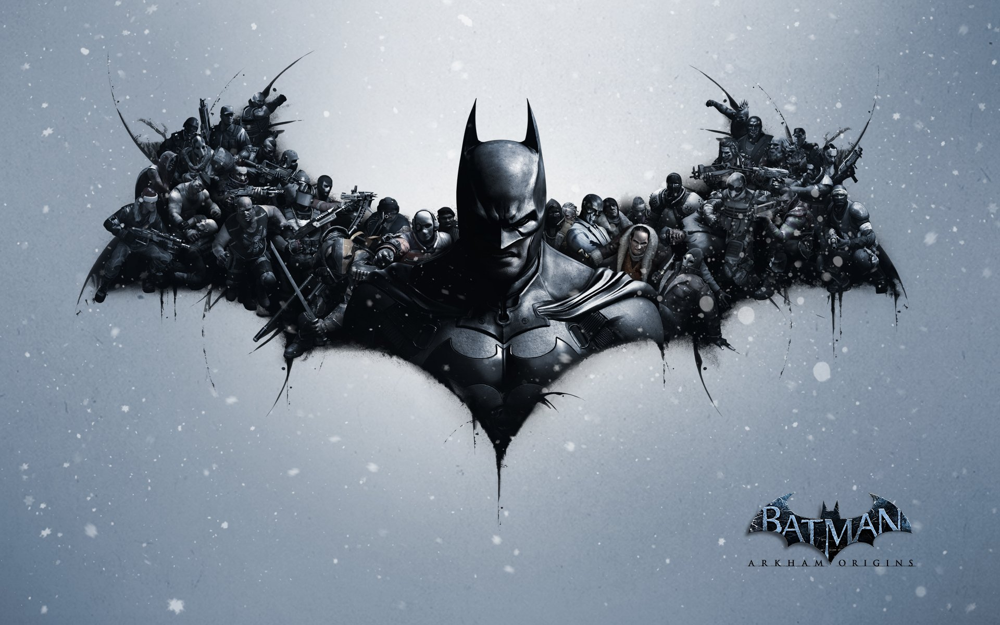
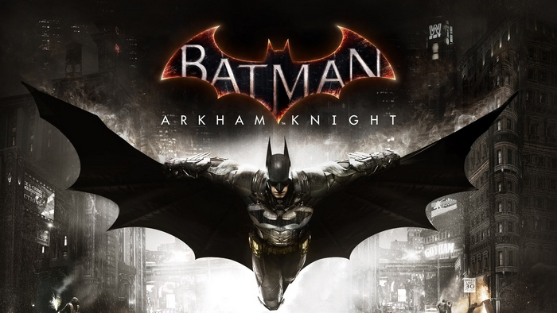

Batman: Arkham Asylum é o primeiro jogo do saga Arkham para os videogames. Lançado em 2009 pela Rocksteady Studios, o jogo foi inovador para a época por seu combate intuitivo, stealth inteligente e história inovadora, sendo um marco para a indústria dos heróis no Videogame e também vencedor do GOTY de 2009.

Batman: Arkham City é o segundo jogo da Saga Arkham para os videogames. Lançado em 2011 pela Rocksteady Studios, o jogo é a aclamada sequência do também aclamado Batman: Arkham Asylum. Com gráficos impressionantes para a época e melhorias na gameplay mas com fidelidade a sua identidade, história de invejar as obras cinematográficas do personagem, Arkham City foi também eleito o GOTY de 2011, consolidando o Morcego como personagem mais influente da cultura pop no mundo dos games.

Batman: Arkham Origins foi lançado emm 2013, desta vez, pela Warner Bros Games. O jogo é uma prequela de Asylum e estabelece as primeiras noites do herói na saga. Com uma históri regular, gráficos contestados e lutas de boss memoráveis, o jogo é deixado de canto mesmo não faltando em qualidade, mas sim em autenticidade.

Batman: Arkham Knight é o quarto e último jogo da saga Arkham. Lançado em 2015 pela Rocksteady Studios, o jogo foi muito bem recebido pela gameplay fluída e qualidade gráfica impressionantes para a geração, porém com críticas em desempenho para PCs e ao excesso do uso do batmovel na gameplay e também pela sua história "previsível" após o meio do jogo. Entretanto, é considerado um bom jogo pela comunidade e um encerramento de arco digno para os fãs do Morcego e de seus videogames.